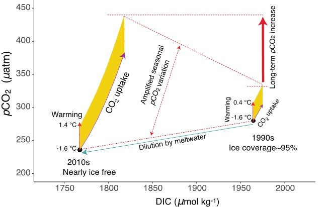
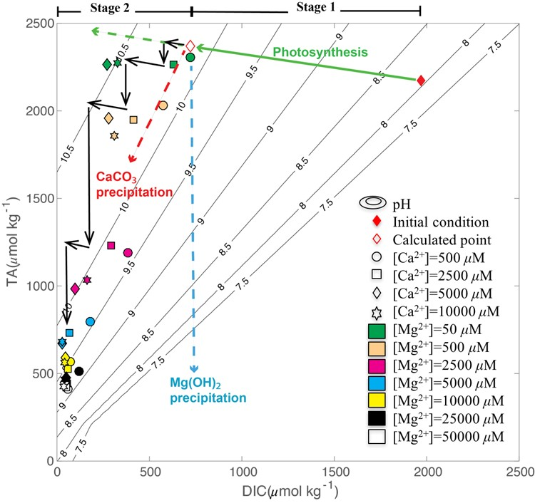

Summertime Evolution of Net Community Production and CO₂ Flux in the Western Arctic Ocean
Journal: Global Biogeochemical Cycles (2021)
To examine seasonal and regional variabilities in metabolic status and the coupling of net community production (NCP) and air–sea CO₂ fluxes in the western Arctic Ocean, we collected underway measurements of surface O₂/Ar and partial pressure of CO₂ (pCO₂) in the summers of 2016 and 2018. With a box-model, we demonstrate that accounting for local sea ice history (in addition to wind history) is important in estimating NCP from biological oxygen saturation (Δ(O₂/Ar)) in polar regions. Incorporating this sea ice history correction, we found that most of the western Arctic exhibited positive Δ(O₂/Ar) and negative pCO₂ saturation, Δ(pCO₂), indicative of net autotrophy but with the relationship between the two parameters varying regionally. In the heavy ice-covered areas, where air-sea gas exchange was suppressed, even minor NCP resulted in relatively high Δ(O₂/Ar) and low pCO₂ with a limited gas exchange. Within the marginal ice zone, NCP and CO₂ flux magnitudes were strongly inversely correlated, suggesting an air to sea CO₂ flux induced primarily by biological CO₂ removal from surface waters. Within ice-free waters, the coupling of NCP and CO₂ flux varied according to nutrient supply. In the oligotrophic Canada Basin, NCP and CO₂ flux were both small, controlled mainly by air-sea gas exchange. On the nutrient-rich Chukchi Shelf, NCP was strong, resulting in great CO2 uptake. This regional overview of NCP and CO₂ flux in the western Arctic Ocean, in its various stages of ice-melt and nutrient status, provides useful insight into the possible biogeochemical evolution of rapidly changing polar oceans.
Sea-ice loss amplifies summertime decadal CO₂ increase in the western Arctic Ocean
Journal: Nature Climate Change (2020)

While rapid climate warming and sea ice loss have induced major changes in sea surface partial pressure of CO₂ (pCO₂), long-term pCO₂ trends are unknown in the Arctic Ocean. Here, we report changes of summer pCO₂ from 1994-2017 in the western Arctic Ocean. We find the rate of increase in the Canada Basin to be more than two times the rate of atmospheric CO₂ increase, in contrast with no significant increase on the Chukchi Shelf. Warming and ice loss in the basin have enhanced CO₂ increase and amplified the pCO₂ seasonal amplitude, and resulted in a rapid decadal increase. Consequently, the summer air-sea CO₂ gradient has reduced rapidly and may become near zero within two decades. In contrast, strong and increasing biological CO₂ uptake has held pCO₂ low on the Chukchi Shelf, and thus the CO₂ sink has increased and may increase further due to the atmospheric CO₂ increase.
Biological regulation of carbonate chemistry during diatom growth under different concentrations of Calcium²⁺ and Magnesium²⁺
Journal: Marine Chemistry (2018)

Algal photosynthesis increases pH to a level that can induce CaCO₃ and Mg(OH)₂ precipitation. However, the roles of Mg²⁺ and Ca²⁺ in regulating the pH-carbonate system during algal growth are not well understood. We examined effects of different [Mg²⁺] (50 to 50,000 μM) under different [Ca²⁺] (500 to 10,000 μM) on pH, dissolved inorganic carbon (DIC) and total alkalinity (TA) during batch culture of the diatom Phaeodactylum tricornutum. The results showed that growth rates and biomass were higher when [Mg²⁺] increased under a fixed [Ca²⁺]. DIC and TA were almost depleted, decreasing from 1968 to ~50 μmol kg⁻¹, and from 2171 to ~500 μmol kg⁻¹, respectively. Paradoxically, higher [Mg²⁺] produced lower maximum pH, which could not be accounted for by DIC consumption. Our analysis reveals that this unexpected lower pH but larger decrease in TA was largely driven by Mg(OH)₂ formation. A reduction in TA decreases pH, which stimulates algal carbon uptake by shifting carbonate species from CO₃²⁻ to bio-available forms (CO₂ and HCO₃⁻). The subsequent photosynthetic drawdown of DIC forces pH to rise again, which leads to more precipitation and again a decrease in TA. We built a conceptual model to explain this biological regulation, describing the dynamic feedback loop of diatom growth, DIC uptake, pH increase, mineral precipitation, TA decrease, pH reduction, and DIC uptake, which drives depletion of DIC and TA. This mechanism demonstrates that high-biomass algal growth can overcome carbon limitation in natural waters at the expense of lowering TA, particularly in eutrophic environments.